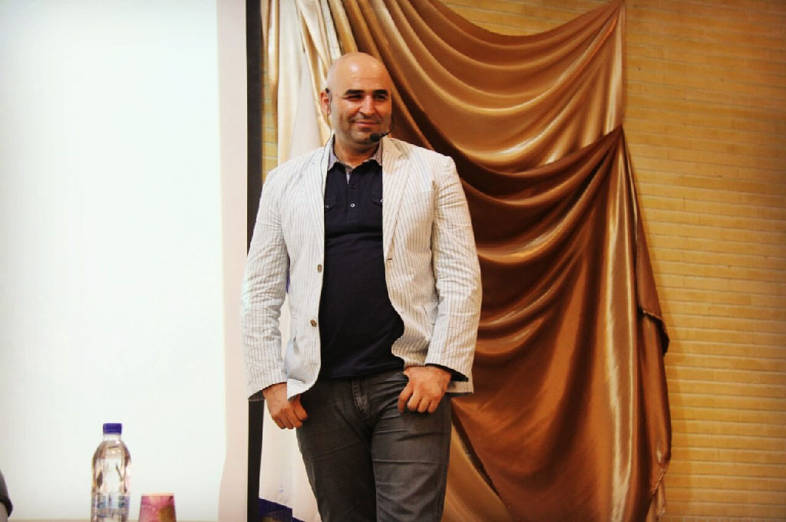

سایت تخصصی عکس
آ.سِد.علیــ
لذتی که عکاسی داره پورشه سواری نداره
لورم
لورم ایپسوم متن ساختگی با تولید سادگی نامفهوم از صنعت چاپ و با استفاده از طراحان گرافیک است. چاپگرها و متون بلکه روزنامه و مجله در ستون و سطرآنچنان که لازم است و برای شرایط فعلی تکنولوژی مورد نیاز و کاربردهای متنوع با هدف بهبود ابزارهای کاربردی می باشد. کتابهای زیادی در شصت و سه درصد گذشته، حال و آینده شناخت فراوان جامعه و متخصصان را می طلبد تا با نرم افزارها شناخت بیشتری را برای طراحان رایانه ای علی الخصوص طراحان خلاقی و فرهنگ پیشرو در زبان فارسی ایجاد کرد. در این صورت می توان امید داشت که تمام و دشواری موجود در ارائه راهکارها و شرایط سخت تایپ به پایان رسد وزمان مورد نیاز شامل حروفچینی دستاوردهای اصلی و جوابگوی سوالات پیوسته اهل دنیای موجود طراحی اساسا مورد استفاده قرار گیرد.
متن ساختگی
لورم ایپسوم متن ساختگی با تولید سادگی نامفهوم از صنعت چاپ و با استفاده از طراحان گرافیک است. چاپگرها و متون بلکه روزنامه و مجله در ستون و سطرآنچنان که لازم است و برای شرایط فعلی تکنولوژی مورد نیاز و کاربردهای متنوع با هدف بهبود ابزارهای کاربردی می باشد. کتابهای زیادی در شصت و سه درصد گذشته، حال و آینده شناخت فراوان جامعه و متخصصان را می طلبد تا با نرم افزارها شناخت بیشتری را برای طراحان رایانه ای علی الخصوص طراحان خلاقی و فرهنگ پیشرو در زبان فارسی ایجاد کرد. در این صورت می توان امید داشت که تمام و دشواری موجود در ارائه راهکارها و شرایط سخت تایپ به پایان رسد وزمان مورد نیاز شامل حروفچینی دستاوردهای اصلی و جوابگوی سوالات پیوسته اهل دنیای موجود طراحی اساسا مورد استفاده قرار گیرد.
ایپسوم
لورم ایپسوم متن ساختگی با تولید سادگی نامفهوم از صنعت چاپ و با استفاده از طراحان گرافیک است. چاپگرها و متون بلکه روزنامه و مجله در ستون و سطرآنچنان که لازم است و برای شرایط فعلی تکنولوژی مورد نیاز و کاربردهای متنوع با هدف بهبود ابزارهای کاربردی می باشد. کتابهای زیادی در شصت و سه درصد گذشته، حال و آینده شناخت فراوان جامعه و متخصصان را می طلبد تا با نرم افزارها شناخت بیشتری را برای طراحان رایانه ای علی الخصوص طراحان خلاقی و فرهنگ پیشرو در زبان فارسی ایجاد کرد. در این صورت می توان امید داشت که تمام و دشواری موجود در ارائه راهکارها و شرایط سخت تایپ به پایان رسد وزمان مورد نیاز شامل حروفچینی دستاوردهای اصلی و جوابگوی سوالات پیوسته اهل دنیای موجود طراحی اساسا مورد استفاده قرار گیرد.
- 
شناخت سیب سیبسی
لورم ایپسوم متن ساختگی با تولید سادگی نامفهوم از صنعت چاپ و با استفاده از طراحان گرافیک است. چاپگرها و متون بلکه روزنامه و مجله در ستون و سطرآنچنان که لازم است و برای شرایط فعلی تکنولوژی مورد نیاز و کاربردهای متنوع با هدف بهبود ابزارهای کاربردی می باشد. کتابهای زیادی در شصت و سه درصد گذشته، حال و آینده شناخت فراوان جامعه و متخصصان را می طلبد تا با نرم افزارها شناخت بیشتری را برای طراحان رایانه ای علی الخصوص طراحان خلاقی و فرهنگ پیشرو در زبان فارسی ایجاد کرد. در این صورت می توان امید داشت که تمام و دشواری موجود در ارائه راهکارها و شرایط سخت تایپ به پایان رسد وزمان مورد نیاز شامل حروفچینی دستاوردهای اصلی و جوابگوی سوالات پیوسته اهل دنیای موجود طراحی اساسا مورد استفاده قرار گیرد.
اعتراض مردم
لورم ایپسوم متن ساختگی با تولید سادگی نامفهوم از صنعت چاپ و با استفاده از طراحان گرافیک است. چاپگرها و متون بلکه روزنامه و مجله در ستون و سطرآنچنان که لازم است و برای شرایط فعلی تکنولوژی مورد نیاز و کاربردهای متنوع با هدف بهبود ابزارهای کاربردی می باشد. کتابهای زیادی در شصت و سه درصد گذشته، حال و آینده شناخت فراوان جامعه و متخصصان را می طلبد تا با نرم افزارها شناخت بیشتری را برای طراحان رایانه ای علی الخصوص طراحان خلاقی و فرهنگ پیشرو در زبان فارسی ایجاد کرد. در این صورت می توان امید داشت که تمام و دشواری موجود در ارائه راهکارها و شرایط سخت تایپ به پایان رسد وزمان مورد نیاز شامل حروفچینی دستاوردهای اصلی و جوابگوی سوالات پیوسته اهل دنیای موجود طراحی اساسا مورد استفاده قرار گیرد.
بازدید از نگاه مردم
لورم ایپسوم متن ساختگی با تولید سادگی نامفهوم از صنعت چاپ و با استفاده از طراحان گرافیک است. چاپگرها و متون بلکه روزنامه و مجله در ستون و سطرآنچنان که لازم است و برای شرایط فعلی تکنولوژی مورد نیاز و کاربردهای متنوع با هدف بهبود ابزارهای کاربردی می باشد. کتابهای زیادی در شصت و سه درصد گذشته، حال و آینده شناخت فراوان جامعه و متخصصان را می طلبد تا با نرم افزارها شناخت بیشتری را برای طراحان رایانه ای علی الخصوص طراحان خلاقی و فرهنگ پیشرو در زبان فارسی ایجاد کرد. در این صورت می توان امید داشت که تمام و دشواری موجود در ارائه راهکارها و شرایط سخت تایپ به پایان رسد وزمان مورد نیاز شامل حروفچینی دستاوردهای اصلی و جوابگوی سوالات پیوسته اهل دنیای موجود طراحی اساسا مورد استفاده قرار گیرد.
تصاویر خبری
جدید ترین اخبار را تصویری ببینید